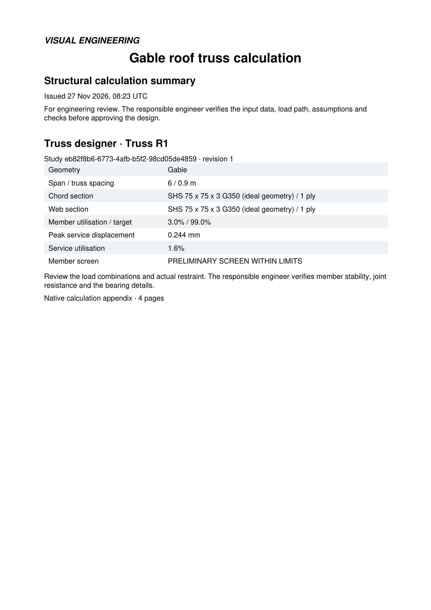

Gable roof truss calculation
The 6 m roof truss uses SHS chords and webs at a tributary spacing of 0.9 m. The entered wind pressures are −0.65 kPa at service and −1.05 kPa at ultimate. The peak service displacement is 0.244 mm.
In the ULS uplift case the reaction acting on the truss at the left bearing is −0.661 kN, with upward positive. Read the individual member checks and proposed joint details alongside the bearing reactions. The engineer verifies the load path and connections before approval.
Loading the report…
